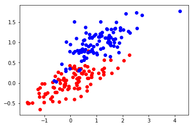
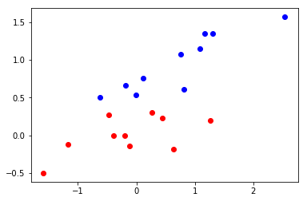
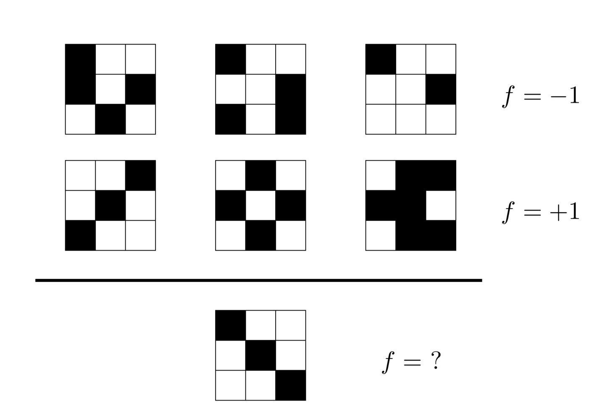
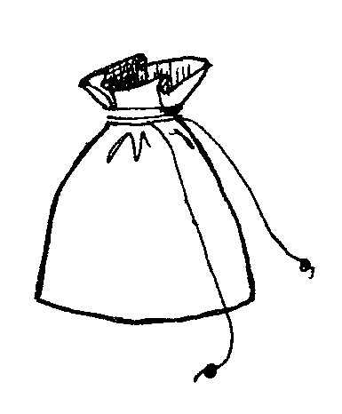

Group Projects
As previousy mentioned, your "final" is a group project.
Accordingly, you need to start planning relatively soon.
To aid your planning, here are the required elements of that project:
- You must find existing data to analyze. Aggregating data from multiple sources encouraged but not required.
- You must visualize 3 interesting features of that data.
- You must come up with some analysis---using tools from the course---which relates your data to either a prediction or a policy conclusion.
- You must present your analysis as if presenting to a C-suite executive.
Teams
You must let me know your team by this Sunday. This will allow us to assign teams by next Tuesday.
If you fail to report your team, then you will be added to the "willing to be randomly assigned" pool.
The course website has a survey to help aid us in putting together teams.
More on Teams
- Your team must come up with a name and a Github site for your project and labs.
- Your team will earn the same scores on all projects and labs.
- Labs can receive either 4,8, or 10 points (out of 10).
- Teams will only submit one write-up.
- For attendance score: one member of a few teams (chosen at random) will present their working code and analysis. I'll select the team, then the team is free to send whomever they like to present their working code and discuss their output. If it doesn't work, the whole team is punished.
To combat additional freeloading, we will use a reporting system. Any team member can email me to report another team member's lack of participation secretly. Two strikes will result in a 10% grade deduction; three strikes will result in a 20% deduction.
Learning from Data
The following are the basic requirements for statistical learning:
- A pattern exists.
- This pattern is not easily expressed in a closed mathematical form.
- You have data.
Social Science Example

Social Science Example

Formalization
Here emissions is a response or target that we wish to predict.
We generically refer to the response as Y.
GDP is a feature, or input, or predictor, or regressor; call it X1.
Likewise let's test our postulate and call westernhem our X2, and so on.
We can refer to the input vector collectively as
X=⎣⎢⎢⎢⎢⎡x11x21x31⋮x12x22x32⋮⎦⎥⎥⎥⎥⎤
We are seeking some unknow function that maps X to Y.
Put another way, we are seeking to explain Y as follows:
Y=f(X)+ϵ
Formalization
We call the function f:X→Y the target function.
The target function is always unknown. It is the object of learning.
Methodology:
- Observe data (x1,y1)…(xN,yN).
- Use some algorithm to approximate f.
- Produce final hypothesis function g≈f.
- Evaluate how well g approximates f; iterate as needed.
What is the Purpose of g(X)?
With a good estimate of f we can make predictions of Y at new points X=x.
We can understand which components of X=(X1,X2,…,Xm) are important in explaining Y , and which are (potentially) irrelevant.
- e.g.,
GDPandyearsindustrializedhave a big impact onemissions, buthydroutilizationtypically does not.
Depending on the complexity of f, we may be able to meaningfully understand how each component of X affects Y.
(But we should be careful about assigning causal interpretations)
The Learning Problem
A "solution" to the learning problem does not consist of g.
Rather, the solutions are the algorithm and the hypotheses that the algorithm may choose from---aka the hypothesis set, denoted H.
- While the final guess is g, a generic member of H is h.
The algorithm and hypothesis set are inseparable.
For example, if one restricts attention to hypotheses that take a linear form, then the hypothesis set could be functions such that
Y=β0+β1X1+β2X2+…βmXm+ϵ
Reducible vs Irreducible Error
Suppose we want to minimize the squared difference between our predictions and the truth.
That is, we wish to minimize:
E(Y−Y^)2=E(f(X)+ϵ−g(X))2=E(f(X)−g(X))2+E(ϵ)2
Note E(ϵ)2=var(ϵ). This is the irreducible error in the learning problem.
The term E(f(X)−g(X))2 represents the reducible error in the problem.
Binary Classification
Examining binary outcomes: signedKyotoProtocol is our response, coded as ±1.
Given some input vector X=(X1,…,Xm), we categorize
j=1∑ni=1∑mwijxij> some threshold,
as "likely" members of Kyoto Protocol.
- How to choose the importance weights} wi
- Give importance weights to the different inputs and compute a ``score".
- Determine likely signatory if ``score'' is acceptable.
- input xi is important (e.g.,
G8country) → large weight ∣wi∣ - input xi beneficial (e.g.,
inEurope) → wi>0.
- input xi is important (e.g.,
Linear Learning
A simple form of binary learning takes the following mathematical form:
Categorize as signer ifj=1∑ni=1∑mwijxij> some threshold,
Categorize as non-signer ifj=1∑ni=1∑mwijxij< some threshold.
This can be formally written as
h(X)=sign((j=1∑ni=1∑mwijxij+w0))
where the "bias weight" w0 corresponds to the threshold.
Linear Learning
This is equivalent to a hypothesis set H={h(X)=sign(WTX)}.
X=⎝⎜⎜⎜⎜⎛1X1⋮Xm⎠⎟⎟⎟⎟⎞
W=⎝⎜⎜⎜⎜⎛w0w1⋮wm⎠⎟⎟⎟⎟⎞
This hypothesis set is called the linear separator.
Geometric / Visual Interpretation

Geometric / Visual Interpretation

Perceptron Learning Algorithm
A perceptron predicts the data by using a line or a plane to separate the red from blue data.
Fitting the data
How to find a hyperplane that separates the data?
- "It's obvious - just look at the data and draw the line," is not a valid solution.
We want to select g∈H such that g≈f.
We certainly want g≈f on the data set D.
- Ideally, g(x)=y for all n data-points.
How do we find such a g in the infinite hypothesis set H, if it exists?
⇒ Start with some weight vector and try to improve it.
Perceptron Learning Algorithm
A simple iterative method in psuedocode:
setthe valuesred= -1,blue= +1initializew(1)=0foreach iteration t=1,2,3,… where the weight vector is w(t)
chooseone misclassified example (x1,y1),…,(xn,yn)- Let's call the misclassified example (x∗,y∗).
- That is,
sign(w(t)⋅x∗)=y∗. updatethe weight such that:
w(t+1)=w(t)+y∗x∗
Perceptron Learning: Success?
PLA implements our idea: start at some weights and try to improve.
- This form of ``incremental learning'' will pop up a lot.
Theorem: If the data can be fit by a linear separator, then after some finite number of steps, the perceptron learning algorithm will find one.
...but after how many steps and what if it can't be separated and is there a faster way?
Human Learning: a "Test"

Outside the Data
An easy visual learning problem is seemingly very messy.
For every f that fits the data and is +1'' on the new point, there is one that is−1.''
Since f is unknown, it can take on any value outside the data, no matter how large the data.
- This is called No Free Lunch.
You cannot know anything for sure about f outside the data without making assumptions.
Is there any hope to know anything about f outside the data set without making assumptions about f?
Yes, if we are willing to give up the "for sure."
The Parable of the Marbles

Within this bag of marbles are ♣ and ♢ marbles
We are going to pick a sample of n marbles (with replacement).
The Parable of the Marbles
Consider a sample composed of ♣ ♣ ♣ ♢ ♣ ♢ ♣
- Let μ be the objective probability to pick a ♣.
- Let ν be fraction of ♣ marbles in the sample.
Question: Can we say anything about μ (outside the data) after observing ν (the data)?
- No. It is possible for the sample to be all ♣ marbles and the bag to be ♢.
Question: Then why do we do polling (e.g. to predict the outcome of the presidential election)?
- The bad case is possible, but not probable.
Hoeffding's Inequality
Hoeffding's Inequality states, loosely, that ν cannot be too far from μ.
Theorem (Hoeffding's Inequality)
P[∣ν−μ∣>ϵ]≤2e−2ϵ2n
ν≈μ is called probably approximately correct (PAC-learning)
Hoeffding's Inequality: Example
Example: n=1,000; draw a sample and observe ν.
- 99% of the time μ−0.05≤ν≤μ+0.05
- (This is implied from setting ϵ=0.05 and using given n)
- 99.9999996% of the time μ−0.10≤ν≤μ+0.10 %
What does this mean?
If I repeatedly pick a sample of size 1,000, observe ν and claim that
μ∈[ν−0.05,ν+0.05] (or that the error bar is ±0.05) I will be right 99% of the time.
On any particular sample you may be wrong, but not often.